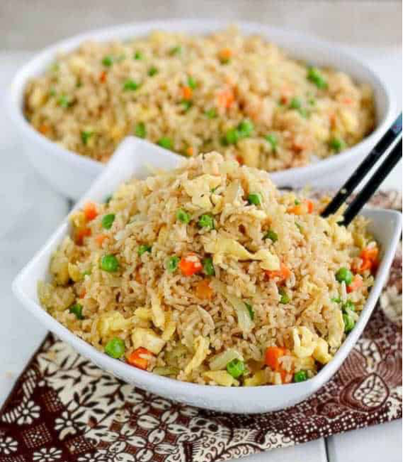

Coconut Fried Rice

Description
Coconut Fried Rice is a combination of highly nutritive and tasty flavours that would make you
celebrate every mouthful.
Ingredients
- ½ to 1 tablespoon (7-15 ml) soy sauce
- ½ cup (120ml) canola oil (or vegetable oil)
- ½ to 1 tablespoon (7-15 ml) oyster sauce
- ½ small onion, thinly sliced
- ½ tablespoon (5g) chicken bouillon powder
- 2 to 3 tablespoons (30-45ml) water or chicken stock
- 1 cup (135g) of peas and carrots
- 2 eggs, beaten lightly
- ¼ to ½ teaspoon (0.5-1g)
- Salt and pepper, to taste
Steps
- Rinse the rice thoroughly with water, straining it twice. Combine the rice in a saucepan with
water,coconut milk, and salt. Place the saucepan over high heat and bring the mixture to a
boil.
- Once boiling, stir the rice, reduce the heat to a low simmer, and cover the saucepan securely
with a lid. Allow it to cook for 15 to 18 minutes.
- After cooking, remove the saucepan from the heat and let it sit covered to cool. Once cooled,
fluff the rice with a fork. This step can be done a day in advance.
- Before proceeding, break apart any clumps of rice.
- In a large wok or skillet, heat approximately one tablespoon of canola or vegetable oil over
medium-high heat.
- Add the rice to the wok and stir vigorously for 2 to 3 minutes. Then, incorporate soy sauce,
oyster sauce, and a tablespoon or more of water or stock as necessary to moisten the rice.
Set the rice aside and quickly wipe the wok or skillet with a clean paper towel or cloth.
- Next, heat another tablespoon of oil in the wok, add the eggs, and swiftly stir to break the
yolks and lightly scramble them. Remove the scrambled eggs and add them to the rice.
- Continue stir-frying by adding another tablespoon of oil to the wok, followed by onions, peas,
carrots, minced garlic, curry powder, and chicken bouillon powder. Stir the mixture until it
becomes fragrant, which should take about 2 minutes.
- Finally, return the rice and scrambled eggs to the wok, stirring until everything is well combined.
Adjust the seasoning with salt and pepper to taste.
- Garnish with chopped scallions and serve.
Home